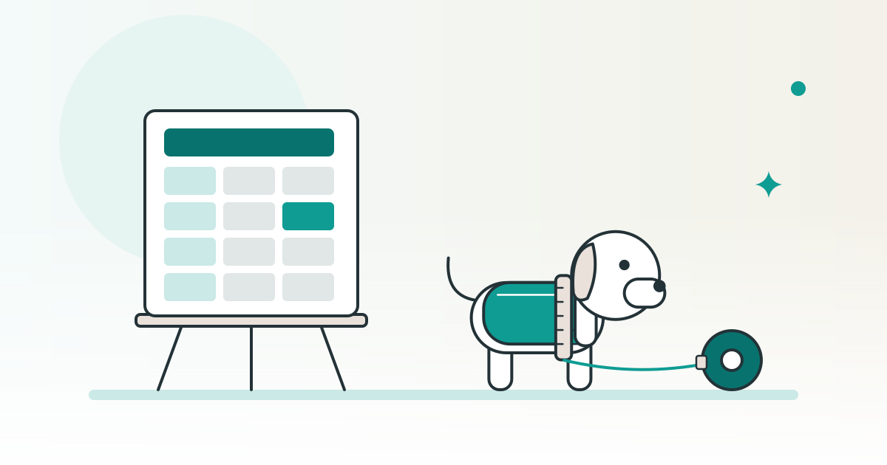

SHOPKIT コラム
犬服の販売ページ用サイズ表を作る測る場所・実寸・案内のそろえ方

犬服のサイズ表は、服のどこを測るかを決め、手元の商品を測った値を、同じ単位で並べて作ります。仕入れ先が付けたサイズ名と実寸を分け、表のそばに測った位置を説明します。犬服を販売するお店に向けて、採寸から販売ページの案内までをそろえる作り方を紹介します。
この記事は、完成品のネットショップを販売している SHOPKIT が書いています。
この記事で分かること
- 服の測定箇所を決め、サイズ名と実寸を分けて記録する方法
- サイズ表に載せる単位・測定位置・写真のそろえ方
- 測り直した記録を、商品ページと案内文へ反映する順序
犬服のサイズ表は、採寸する場所を決めることから始める
先に決めるのはサイズ名より、測定の始点と終点です。「首回り」「胴回り」「着丈」という項目名だけでは、別の人が測ったときに同じ場所へ戻れないことがあります。商品を手元に置き、どこからどこまで測るかを記録します。
次の表は、服そのものを測る場所を決めるための例です。商品の形に合わせて、使う項目と測定位置を選びます。フードや飾り、裾の形が違う服へ、別の商品の説明をそのまま流用しないようにします。
| 載せる項目の例 | お店で決める測定位置 | 一緒に残す説明 |
|---|---|---|
| 首回りの実寸 | 服の首を通す開口部の、どの線に沿って一周を測るか | 襟や留め具を含む位置と、留め具を閉じるかどうか |
| 胴回りの実寸 | 服の胴部分のどの位置で、周囲を測るか | 前足を通す部分や縫い目との位置関係 |
| 着丈の実寸 | 背中側で、どの縫い目や端を始点にし、裾のどこまで測るか | 襟・フード・裾の飾りを含むかどうか |
| 必要に応じて足す項目 | 袖や足を通す部分など、その商品の形を判断するために必要な所 | 項目名だけで分からない測定位置 |
服を置く向き、留め具の状態、生地を引っ張るかどうかも、採寸の手順へ書きます。たとえば「留め具を閉じ、生地を伸ばさずに測る」という方法を選んだら、同じ商品ではその条件をそろえます。商品の違いで方法を変える場合は、別の測定条件として残します。
平らに置いた幅を測った値と、一周を測った値は、表の項目名で区別します。「胴回り」と書いた欄へ、片面だけの幅を混ぜないでください。販売ページで使う言葉を決めてから採寸すると、記録から表へ移す際の取り違えを防ぐ確認ができます。
仕入れ先のサイズ名と、自分で測った実寸は別の欄にする
サイズ名は商品を選ぶための表記として残し、実寸は別に記録します。仕入れ先のサイズ名が同じでも、別の商品の寸法まで同じとは限りません。サイズ名から測定値を補わず、手元の商品と対応する欄を作ります。
採寸の記録には、商品名だけでなく、その商品を見分ける品番や色、付いていたサイズ表記も残します。在庫全体の管理方法まで広げず、ここでは「どの服を測った値なのか」を後からたどれる状態にします。
| 分ける欄 | 記録する内容 | 販売用の表へ移すとき |
|---|---|---|
| 商品の識別 | 商品名、品番、色、測った現物を見分ける情報 | 別の商品の記録を取り込んでいないかを見る |
| 仕入れ先のサイズ名 | 商品に付いていたサイズの表記 | 購入者が選ぶサイズ名と対応させる |
| お店で測った実寸 | 決めた位置を、自分で測った値 | 測定箇所と単位を添えて載せる |
| 仕入れ先の寸法資料 | 参照した資料の名前や確認した日 | 自分の実測値として転記しない |
仕入れ先の寸法と手元の採寸が違ったら、測る位置と方法、現物のサイズ名を見直します。読みやすい値へ書き換えたり、資料の値へ合わせたりせず、どの条件で違いが出たかを記録へ戻します。測れていないサイズは、近いサイズの値から埋めない方針にします。
関連：犬服のネットショップを始める｜価格帯・原価・仕入れの考え方
販売ページには、測った所と単位をそろえて載せる
表の見出しには、実寸の項目名と単位を付けます。商品ごとに項目の並びや呼び方が変わると、買う人が別の表と取り違えるおそれがあります。お店の中で同じ測り方を使う商品は、表の並びもそろえます。
次は、掲載する表を作る際の記入欄の見本です。ここには商品寸法の数字を入れていません。販売ページには、対象の現物を測った値だけを載せます。
| 商品・サイズ名 | 首回りの実寸 | 胴回りの実寸 | 着丈の実寸 |
|---|---|---|---|
| 測った商品とサイズ表記 | 開口部を一周測った値 | 決めた胴の位置を一周測った値 | 背中側の始点から裾までの値 |
長さをセンチメートルで載せる場合は、表の見出しやすぐそばに「単位：cm」と書きます。測定箇所の説明は、表と離れた場所へ追いやらず、同じ商品ページで続けて読める位置へ置きます。
写真で補う場合は、測定箇所が分かる服の向きと、メジャーの始点・終点をそろえて撮ります。着用した姿の写真を使う場合も、商品の実寸表と、着用しているサイズ名が対応しているかを見ます。商品の写真のそろえ方は、別の記事で扱っています。
関連：ネットショップの商品写真の撮り方｜一覧でそろって見える条件と使えない画像
消費者庁の優良誤認の説明は、商品の内容を実物よりも大幅によく見せ、購入の判断を不当に誘うような表示などを禁じています。採寸の表でも、実際に測った値と説明を対応させ、特定の犬へ合うという案内を、寸法だけから付け足さないようにします。
測った日と測った人を、採寸の記録に残す
採寸の記録と、販売ページへ載せる表を分けて持ちます。購入者へ見せる表は読みやすくまとめ、手元の記録には、現物・方法・測った人・日付を残します。数字を直した理由が分かるようにするためです。
- 測定する商品を決める
品番、色、サイズ名と現物を照合し、記録を始めます。
- 測り方をそろえる
首や胴の測定位置、着丈の始点と終点、留め具や生地の状態を確認します。
- 測った値と条件を残す
実寸、単位、採寸日、採寸した人を記録します。別の方法で測った値は同じ欄へ上書きしません。
- 表と案内へ反映する
商品ページの値、測定位置の説明、写真との対応を見直します。変更した日と理由は手元の記録へ残します。
測り直すときも、古い数字だけを消して終わらせず、どの現物をどの方法で測ったかをたどれるようにします。担当する人が変わるときには、記録と現物を一緒に確認してもらいます。
サイズの案内は、服の実寸と測り方を伝える
案内文は、表にある服の寸法を読み取れる内容にします。「この犬種ならこのサイズ」と決める文章より、どの服を、どこからどこまで測った値かを説明します。服の寸法の表と、犬の身体の寸法を混同しない見出しにします。
生地に伸びがある商品では、伸ばさず測った値なのか、別の条件の値なのかを明記します。どの程度のゆとりを加えるかや、体重からサイズを決める数値は、この表から作りません。購入者から聞かれた場合も、商品と測定箇所を確認し、記録にある情報を案内します。
「サイズが合わない」という連絡が来た場合の返品の決まりは、採寸方法と分けて案内します。消費者庁の通信販売のガイドは、広告に返品の取り決めを示していない場合、商品の受取日から数えて8日以内なら申込みを撤回したり契約を解除したりでき、返す送料は買い手が負担すること、事前に特約を示した場合はそれによることを説明しています。自分のお店の案内を整理する際は、返品の決まりを扱う記事へ進んでください。
お店を買って始めるときも、受け取った表と現物を照らし合わせる
用意された商品説明を受け取るときも、サイズ表の測り方と現物を見ます。表の値の出どころ、採寸した商品、単位、測定位置の説明がそろっているかを確認します。元の条件が分からなければ、自分のお店で採用する方法を決めて測り直し、説明と一緒にそろえます。
SHOPKITの2026年10月15日時点のサービスページは、商品と店舗を整えて販売を始める準備をした状態でお渡しすると案内しています。お渡しする内容には、お店一式と仕入れの情報、運営・集客のマニュアルが含まれます。出典：お渡しするもの。
購入前には、商品ごとのサイズ表に何が載るか、測定箇所や採寸記録まで受け取れるかを、実物や資料を見ながら質問します。掲載済みの表があることと、その表の数値を自分のお店で説明できることを分けて考えます。
よくある質問
犬服のサイズ名が同じなら、実寸も同じとして載せてよいですか？
サイズ名だけで実寸を埋めず、販売する商品を測ります。仕入れ先の表記と、自分で測った値を別々に記録し、どの商品とサイズの値かを対応させます。
販売用サイズ表には、平らに置いた服の幅を載せてもよいですか？
幅として載せる場合は、片面のどの位置を測った値かを説明します。一周を測った値と同じ「胴回り」の欄へ混ぜず、項目名と測定位置をそろえます。
採寸を別の人へ引き継ぐとき、何を渡しますか？
測る現物、測定位置と方法、使う単位、これまでの採寸記録を渡します。服の向きや留め具の状態もそろえ、採寸した人と日付を新しい記録へ残します。
サイズ表の数字を直したら、商品ページのどこまで見直しますか？
表だけでなく、測定箇所の説明、単位、採寸の写真、サイズを案内する文章まで対応を見ます。直した日と理由は手元の記録へ残し、以前の値と取り違えないようにします。
※ SHOPKITについての記述は2026年10月15日時点のサービスページ、公的資料は2026年10月26日の確認内容に基づきます。採寸箇所・記録欄・手順は、販売用の表をそろえるための作り方の例です。